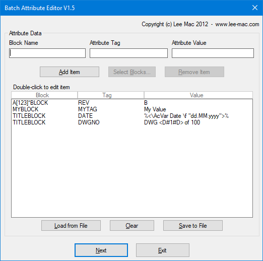
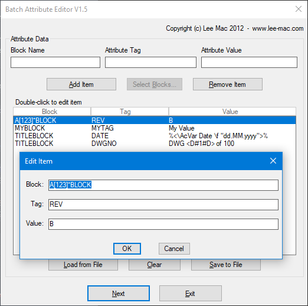
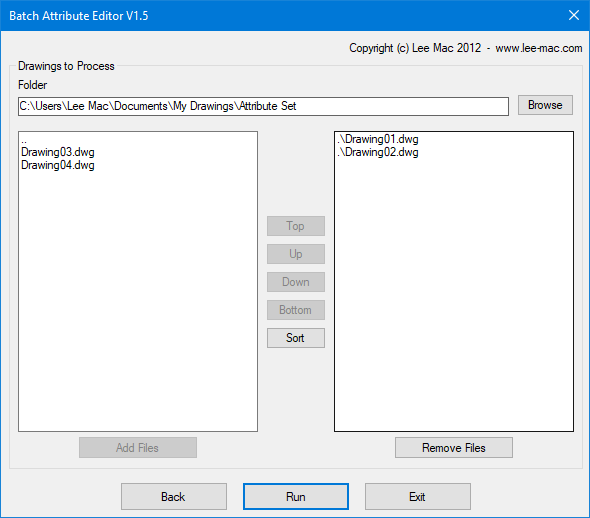

Batch Attribute Editor
This page is delivered for consistency purposes only, as part of the LeeMac sample module of DynALisp, which shows how DynALisp turns existing AutoLISP programs into a module. The program and its description are the work of Lee Mac, who keeps all the credit for them. The original page, with the latest version, is on Lee Mac's website: https://lee-mac.com/batte.html
| Function Syntax | LM-BatchAttributeEditor – original syntax: batte (see aliases) |
| Current Version | 1.5 |
| Compatible with AutoCAD for Mac? | No |
| Compatible with AutoCAD LT? | No |
| Original Page | lee-mac.com/batte.html |
Program Description
This program allows the user to modify the values of multiple attributes residing within multiple attributed blocks across multiple drawings.
Upon starting the program using the command syntax BAtte (Batch Attribute Editor) at the command-line, the user is presented with the first of two dialog interfaces: the first screen for input of attribute data; the second for drawing selection.
Batch Attribute Editor Attribute Data Interface

Entering Attribute Data
At the top of the first dialog there are three edit boxes in which the user can input a Block Name, Attribute Tag and a new value for such attribute.
The Block Name field specifies the block in which the attribute to be modified is located. This field is not case-sensitive and may use wildcards to match multiple blocks containing the same attribute tag.
For example, specifying a Block Name: *BLOCK will match all blocks whose block name ends with BLOCK, or any case variation of that pattern.
The Attribute Tag field specifies the tag name of the attribute to be modified (Note: this is not the attribute prompt string). This field is also not case-sensitive and, as per the restrictions on attribute tag names, the attribute tag cannot contain spaces.
Finally, the Value field specifies the new content for the attribute. There are no restrictions on this field and it may be left blank if the attribute value is to be removed.
Note that the Attribute Value section may contain Field Expressions (expressions displayed at the base of the Field Command dialog), and may also use values that will increment with every drawing processed by the program (this is explained in more detail in the section below entitled: Incrementing Attribute Values.
After specifying the Block Name, Attribute Tag and Value, the item may be added to the list of items to be modified by clicking the 'Add Item' button, or by pressing 'Enter' from within the Value edit box.
Incrementing Attribute Values
The Editor also allows the user to automatically increment attribute values or sections of attribute values across layouts or drawings as they are processed by the program. This functionality may be particularly useful where attributes displaying drawing or layout numbers are concerned.
Incrementing by Layout (<L# ... #L>)
To increment an attribute value for every layout in a drawing, enclose a numerical section of the new attribute value with the markers <L# & #L>.
The numerical value surrounded by such markers will then be incremented to match the order of the layout tabs within each drawing processed.
To give an example:
Attribute value entered into program: Layout <L#1#L> of 3
Attribute value in 1st Paperspace layout: Layout 1 of 3
Attribute value in 2nd Paperspace layout: Layout 2 of 3
Attribute value in 3rd Paperspace layout: Layout 3 of 3
...
Note: The program has been designed with the assumption that the first Paperspace layout should represent layout number 1. If, however, the Modelspace layout forms one of the sheets in your drawing, commence the numbering at layout 2, e.g.: Layout <L#2#L> of 3.
Incrementing by Drawing (<D# ... #D>)
To increment an attribute value across drawings, enclose a numerical section of the attribute with the markers <D# and #D>
To give an example:
Attribute value entered into program: DWG <D#1#D> of 100
Attribute value in 1st drawing processed: DWG 1 of 100
Attribute value in 2nd drawing processed: DWG 2 of 100
Attribute value in 3rd drawing processed: DWG 3 of 100
...
The above example is also illustrated in the program screenshots below.
Referencing Existing Attribute Values
The Editor also provides the ability to reference an existing attribute value, either that of the attribute being modified (so as to facilitate a prefix and/or suffix), or of another attribute held by the same block.
To reference the value of an existing attribute, enclose the attribute tag with the markers <[ and ]>
To give an example:
Assume we have block containing the attribute MyTag which has a value of Value1 in drawing 1, Value2 in drawing 2 etc.
Attribute value entered into program: Prefix<[MyTag]>Suffix
Attribute value in 1st drawing processed: "PrefixValue1Suffix"
Attribute value in 2nd drawing processed: "PrefixValue2Suffix"
Attribute value in 3rd drawing processed: "PrefixValue3Suffix"
...
Selecting Blocks
Attribute items may also be added to the list by selecting attributed blocks from the active drawing. Upon the clicking the 'Select Blocks' button on the main dialog, the user is prompted to make a selection of attributed blocks.
The values of all attributes within each block in the selection are then displayed in an intermediate dialog interface, allowing the user to choose which items from the selection should be added to the list of items to be modified by the program.
Duplicate items, (that is, where a block and tag combination appears more than once in the selection), will be removed from the selection and the user will be notified of the items that have been discarded.
The user will also be informed of an item clash, (that is, when selected block and tag combinations from the block selection already exist in the main attribute data list). If the user decides to proceed at this prompt, these selected items will replace those already present in the main list.
The Attribute Data List
The list box panel displays a list of attributes to be modified by the program. Items in this list may be edited by double-clicking on them.
Multiple items may be removed from the list by selecting them and clicking the 'Remove Item' button. Or the whole list may be removed by clicking the 'Clear' button.
The list of attribute data may be exported to a CSV or Text file by clicking the 'Save to File' button and creating an appropriate file saved to a desired location using the dialog that subsequently appears.
Similarly, attribute data be loaded from a CSV or Text file by clicking the 'Load from File' button and selecting a file from the dialog that is displayed. For information about the required format of data for importing, see the section below entitled Notes on Importing Attribute Data.
Selecting Drawings
The second dialog interface is dedicated to selection of drawings to be processed by the program. Here, the user may select a directory using either the 'Browse' button at the top of the dialog, or by entering a folder path into the 'Folder' edit box; then proceed to browse the files and folders within that directory from the left-hand list pane.
The folder structure may be navigated from within the left-hand list pane by double-clicking on a listed folder, or on the parent folder symbol ('..').
Drawing files may be added to the right-hand list pane by double-clicking on a file, or by selecting multiple files and clicking the 'Add Files' button. Similarly, files may be removed from the right-hand list pane by double-clicking on a file or by selecting a group of files and clicking the 'Remove Files' button.
Drawing files in the right-hand list pane are displayed using a relative path, relative to the directory that is currently selected in the left-hand list pane.
After attribute data has been entered and a number of drawings have been selected to be processed, the user may click the 'Run' button to modify the listed attributes in each of the select drawings.
Dialog Previews
Attribute Data Interface
Editing an Entry

Selecting Drawings to be Processed

Notes on Importing Attribute Data
The program will accept two file formats:
- Comma Separated Value files (.csv)
- Text files (.txt)
The file to be imported should have three columns for Block Name, Attribute Tag and Attribute Value (in that order). If using a Text file, the columns should be tab-delimited.
As per adding items from within the program, the Block and Tag values must be present; however, the Value item may be empty if required.
The Tag values must not contain spaces.
Items that are not in the format required by the program will be removed from the list, and the user will be notified of which items have been removed.
Duplicate items will be removed from the list. Duplicate items arise when the same block and tag combination appears more than once in the list. For these cases, the first occurrence of the item will be used.
Hints and Tips!
- When the dialog first appears, the Block Name field will take focus. The user can then cycle between the Block Name, Attribute Tag and Attribute Value fields by pressing 'Enter', finally adding the item to the list by pressing 'Enter' from within the Value field.
- Drawing files may be added and removed to and from the left and right list box panels by double clicking on the files.
Bundled program notes
;;-----------------------=={ Batch Attribute Editor }==------------------------;;
;; ;;
;; -------------------------------------------- ;;
;; Program Description ;;
;; -------------------------------------------- ;;
;; ;;
;; This program allows the user to modify the values of multiple attributes ;;
;; residing within multiple attributed blocks across multiple drawings. ;;
;; ;;
;; Upon starting the program using the command syntax 'BAtte' ;;
;; (Batch Attribute Editor) at the command-line, the user is presented with the ;;
;; first of two dialog interface screens: the first screen for input of ;;
;; attribute data; the second for drawing selection. ;;
;; ;;
;; -------------------------------- ;;
;; Entering Attribute Data ;;
;; -------------------------------- ;;
;; ;;
;; At the top of the first screen there are three edit boxes in which the ;;
;; user can input a Block Name, Attribute Tag and a new value for such ;;
;; attribute. ;;
;; ;;
;; The Block Name field specifies the block in which the attribute to be ;;
;; modified is located. This field is not case-sensitive and may use wildcards ;;
;; to match multiple blocks containing the same attribute tag. ;;
;; ;;
;; For example, specifying a Block Name: "*BLOCK" (without the quotes), will ;;
;; match all blocks whose block name ends with "BLOCK", or any case variation ;;
;; of that pattern. ;;
;; ;;
;; The Attribute Tag field specifies the tag name of the attribute to be ;;
;; modified (Note: this is not the attribute prompt string). This field is ;;
;; also not case-sensitive and, as per the restrictions on attribute tag names, ;;
;; the attribute tag cannot contain spaces. ;;
;; ;;
;; Finally, the Value field specifies the new content for the attribute. ;;
;; There are no restrictions on this field and it may be left blank if the ;;
;; attribute value is to be removed. ;;
;; ;;
;; After specifying the Block Name, Attribute Tag and Value, the item may be ;;
;; added to the list of items to be modified by clicking the 'Add Item' button, ;;
;; or by pressing 'Enter' from within the Value edit box. ;;
;; ;;
;; -------------------------------- ;;
;; Incrementing Attribute Values ;;
;; -------------------------------- ;;
;; ;;
;; The Editor also allows the user to automatically increment attribute values ;;
;; or sections of attribute values across drawings as they are processed by the ;;
;; program. This functionality may be particularly useful where attributes ;;
;; displaying drawing numbers are concerned. ;;
;; ;;
;; To increment an attribute value across drawings, enclose a numerical section ;;
;; of the attribute with the markers "<#" and "#>" ;;
;; ;;
;; To give an example: ;;
;; --------------------- ;;
;; ;;
;; Attribute value entered into program (minus quotes): ;;
;; ;;
;; "DWG <#1#> of 100" ;;
;; ;;
;; Attribute value in 1st drawing processed: "DWG 1 of 100" ;;
;; Attribute value in 2nd drawing processed: "DWG 2 of 100" ;;
;; Attribute value in 3rd drawing processed: "DWG 3 of 100" ;;
;; ... ... ;;
;; ;;
;; -------------------------------- ;;
;; Selecting Blocks ;;
;; -------------------------------- ;;
;; ;;
;; Attribute items may also be added to the list by selecting attributed blocks ;;
;; from the active drawing. Upon the clicking the 'Select Blocks' button on the ;;
;; main dialog, the user is prompted to make a selection of attributed blocks. ;;
;; ;;
;; The values of all attributes within each block in the selection are then ;;
;; displayed in an intermediate dialog interface, allowing the user to choose ;;
;; which items from the selection should be added to the list of items to be ;;
;; modified by the program. ;;
;; ;;
;; Duplicate items, (that is, where a block and tag combination appears more ;;
;; than once in the selection), will be removed from the selection and the user ;;
;; will be notified of the items that have been discarded. ;;
;; ;;
;; The user will also be informed of an item clash, that is, when selected ;;
;; block and tag combinations from the block selection already exist in the ;;
;; main attribute data list. If the user decides to proceed at this prompt, ;;
;; these selected items will replace those already present in the main list. ;;
;; ;;
;; -------------------------------- ;;
;; The Attribute Data List ;;
;; -------------------------------- ;;
;; ;;
;; The list box panel displays a list of attributes to be modified by the ;;
;; program. Items in this list may be edited by double-clicking on them. ;;
;; ;;
;; Multiple items may be removed from the list by selecting them and clicking ;;
;; the 'Remove Item' button. Or the whole list may be removed by clicking the ;;
;; 'Clear' button. ;;
;; ;;
;; The list of attribute data may be exported to a CSV or Text file by clicking ;;
;; the 'Save to File' button and creating an appropriate file saved to a ;;
;; desired location using the dialog that subsequently appears. ;;
;; ;;
;; Similarly, attribute data be loaded from a CSV or Text file by clicking the ;;
;; 'Load from File' button and selecting a file from the dialog that is ;;
;; displayed. For information about the required format of data for importing, ;;
;; see the section below entitled 'Notes on Importing Attribute Data'. ;;
;; ;;
;; -------------------------------- ;;
;; Selecting Drawings ;;
;; -------------------------------- ;;
;; ;;
;; The second screen of the dialog is dedicated to selection of drawings ;;
;; to be processed by the program. Here, the user may select a directory using ;;
;; either the 'Browse' button at the top of the dialog, or by entering a folder ;;
;; path into the 'Folder' edit box; then proceed to browse the files and ;;
;; folders within that directory from the left-hand list pane. ;;
;; ;;
;; The folder structure may be navigated from within the left-hand list pane ;;
;; by double-clicking on a listed folder, or on the parent folder symbol ('..') ;;
;; ;;
;; Drawing files may be added to the right-hand list pane by double-clicking ;;
;; on a file, or by selecting multiple files and clicking the 'Add Files' ;;
;; button. Similarly, files may be removed from the right-hand list pane by ;;
;; double-clicking on a file or by selecting a group of files and clicking the ;;
;; 'Remove Files' button. ;;
;; ;;
;; Drawing files in the right-hand list pane are displayed using a relative ;;
;; path, relative to the directory that is currently selected in the left-hand ;;
;; list pane. ;;
;; ;;
;; After attribute data has been entered and a number of drawings have been ;;
;; selected to be processed, the user may click the 'Run' button to modify the ;;
;; listed attributes in each of the select drawings. ;;
;; ;;
;;-------------------------------------------------------------------------------;;
;; ;;
;; -------------------------------------------- ;;
;; Notes on Importing Attribute Data ;;
;; -------------------------------------------- ;;
;; ;;
;; The program will accept two file formats: ;;
;; ;;
;; - Comma Separated Value files (.csv) ;;
;; - Text files (.txt) ;;
;; ;;
;; The file to be imported should have three columns for Block Name, Attribute ;;
;; Tag and Attribute Value (in that order). If using a Text file, the columns ;;
;; should be tab-delimited. ;;
;; ;;
;; As per adding items from within the program, the Block and Tag values must ;;
;; be present; however, the Value item may be empty if required. ;;
;; The Tag values must not contain spaces. ;;
;; ;;
;; Items that are not in the format required by the program will be removed ;;
;; from the list, and the user will be notified of which items have been ;;
;; removed. ;;
;; ;;
;; Duplicate items will be removed from the list. Duplicate items arise when ;;
;; the same block and tag combination appears more than once in the list. For ;;
;; these cases, the first occurrence of the item will be used. ;;
;; ;;
;;-------------------------------------------------------------------------------;;
;; ;;
;; -------------------------------------------- ;;
;; Hints and Tips! ;;
;; -------------------------------------------- ;;
;; ;;
;; When the dialog first appears, the Block Name field will take focus. ;;
;; The user can then cycle between the Block Name, Attribute Tag and Attribute ;;
;; Value fields by pressing 'Enter', finally adding the item to the list by ;;
;; pressing 'Enter' from within the Value field. ;;
;; ;;
;; Drawing files may be added and removed to and from the left and right list ;;
;; box panels by double clicking on the files. ;;
;; ;;
;;-------------------------------------------------------------------------------;;
;; ;;
;; Function Syntax: BAtte ;;
;; ;;
;;-------------------------------------------------------------------------------;;
;; ;;
;; Author: ;;
;; ;;
;; Copyright © 2012 Lee Mac - www.lee-mac.com ;;
;; ;;
;;-------------------------------------------------------------------------------;;
;; ;;
;; TERMS AND CONDITIONS OF USE ;;
;; ;;
;; This license and disclaimer statement constitutes a legal agreement between ;;
;; you (either as an individual or a single entity) and Lee Mac (the "Author"), ;;
;; for this software product (the "Software"). ;;
;; ;;
;; By downloading, installing, copying, or otherwise using the software, you ;;
;; agree to be bound by all of the following terms and conditions of this ;;
;; license and disclaimer agreement. ;;
;; ;;
;; If you do not agree with all the terms and conditions of this agreement, ;;
;; you must immediately cease use of the Software and destroy all copies of the ;;
;; Software and all of its component or constituent parts in your possession ;;
;; or under your control. ;;
;; ;;
;; The Software is freeware. You may use it royalty free for private use. ;;
;; ;;
;; You may redistribute the Software providing you have written consent from ;;
;; the Author, and that no modifications are made to the original content. ;;
;; ;;
;; You may not charge any fees for the redistribution or use of this Software. ;;
;; ;;
;; The Software is provided "as is", and with all faults. All warranties, ;;
;; expressed or implied, including, but not limited to implied warranties of ;;
;; fitness for a particular use or purpose are hereby disclaimed. There is no ;;
;; guarantee that the operation of this Software will be uninterrupted or ;;
;; error free. ;;
;; ;;
;; You acknowledge and agree that your use of the Software is at your own risk. ;;
;; ;;
;; The Software is a copyrighted work and is protected by copyright law and ;;
;; international copyright treaty. ;;
;; ;;
;;-------------------------------------------------------------------------------;;
;; ;;
;; Version History: ;;
;; -------------------------------------- ;;
;; ;;
;; 1.0: 30/01/2012 - First Release. ;;
;; ;;
;;-------------------------------------------------------------------------------;;
;; ;;
;; 1.1: 10/02/2012 - Fixed scripting bug involving save overwrite prompt ;;
;; ;;
;; - 'My Documents' folder is now redirected to 'Documents' ;;
;; in Vista and 7 OS (similarly for 'My Music' etc.) ;;
;; ;;
;; - Split interface into two separate dialogs to allow for ;;
;; users without a widescreen resolution. ;;
;; ;;
;;-------------------------------------------------------------------------------;;
;; ;;
;; 1.2: 05/03/2012 - Implemented another attempted fix to overcome the ;;
;; scripting bug involving save overwrite prompt. ;;
;; ;;
;; - Added ability to select multiple attributed blocks ;;
;; from the drawing and select items from the selection ;;
;; to add to the attribute data list. ;;
;; ;;
;;-------------------------------------------------------------------------------;;
;; ;;
;; 1.3: 05/05/2012 - Fixed directory sorting bug resulting from the use of ;;
;; an ASCIIbetical sort causing the parent directory ;;
;; symbol (..) to not appear at the top of the list when ;;
;; folders beginning with characters whose ASCII code is ;;
;; less than 46 are present. ;;
;; ;;
;; - Attribute modification module rewritten to use Visual ;;
;; LISP methods, enabling processing of Multiline ;;
;; Attributes and allowing the use of Field Expressions in ;;
;; attribute values. ;;
;; ;;
;; - Added ability to use incrementing attribute values in ;;
;; attribute data. If a value contains markers "<#" and ;;
;; "#>", the numerical data between these markers will be ;;
;; incremented by one for each drawing processed. ;;
;; ;;
;;-------------------------------------------------------------------------------;;
;; ;;
;; 1.4: 02/08/2012 - Implemented a file and folder sorting function to ;;
;; emulate the Windows Explorer filename sort. ;;
;; ;;
;; - Increased edit_box character limits to allow for the ;;
;; use of long Field Expressions in attribute values. ;;
;; ;;
;; - Fixed behaviour of 'Add Files' button following the ;;
;; addition of a file to the list of drawings to be ;;
;; processed by double-clicking. ;;
;; ;;
;;-------------------------------------------------------------------------------;;
Command Names And Aliases
As in every DynALisp module, each program of this sample module has one main command, named LM-*, and the original command names of Lee Mac's page are kept as its aliases: they run the same command, and can be added, renamed or removed in Dyl-Suite (saved in Resources\Aliases.csv).
| Command | Aliases | Name |
|---|---|---|
| LM-BatchAttributeEditor | BATTE | Batch Attribute Editor |